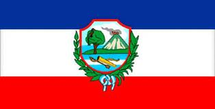

Inicio y Presentación Ilustrativa
1. Ubicación Geografíca.
2.Origen del Nombre.
3.Divisón Política.
4.Grupos Étnicos.
5.Costumbres y Tradiciones.
6.Flora y Fauna.
7.Actividades Economícas.
8. Lugares Turísticos y/o interés.
¡Ven y disfruta de estos maravillosos lugares que te ofrece Baja Verapaz!
Roselyn Paola Esquite Barrientos 5to Baco
Código: E036 Curso: Programación Profesor: Giovanni Cabrera.
Liceo Valle del Sol